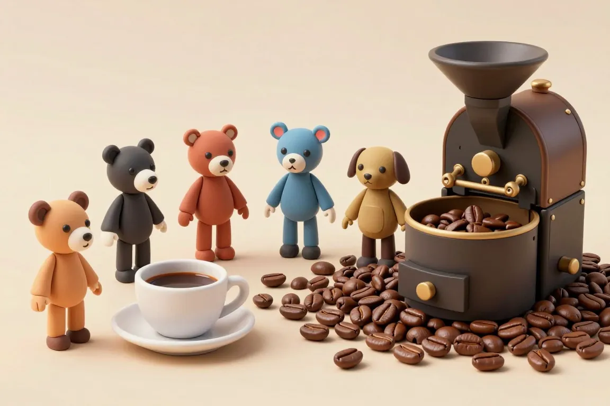

internet · 2017–now · also: Animoji, Memoji, Face-tracked emoji, 3D emoji
A rendered 3D head, an animal or a user cartoon, that copies the face of the user in real time. Apple showed Animoji with the iPhone X in 2017, and Memoji followed in 2018.

Core thesis
The emoji copies the face of the sender: a mask with a voice, not a fixed picture.
Design principles
Render a round head with a 1:1 ratio, a diameter of 120px to 240px, and soft studio light from the top left.
Use a clay-like surface with a roughness of 0.6 and no visible texture; keep colours flat and bright.
Make the eyes 12% of the head width, glossy, with one 4px highlight at the top right.
Copy the face of the user at 60 fps: eyebrows, eyelids, jaw and mouth corners map to the head.
Cast a soft contact shadow of 24px blur at 18% opacity under the head on a pale violet ground.
Offer the head in a grid of 4 columns with 16px gutters and a record button of 64px at the base.
Limit a recorded clip to 10 seconds and export it at 30 fps.